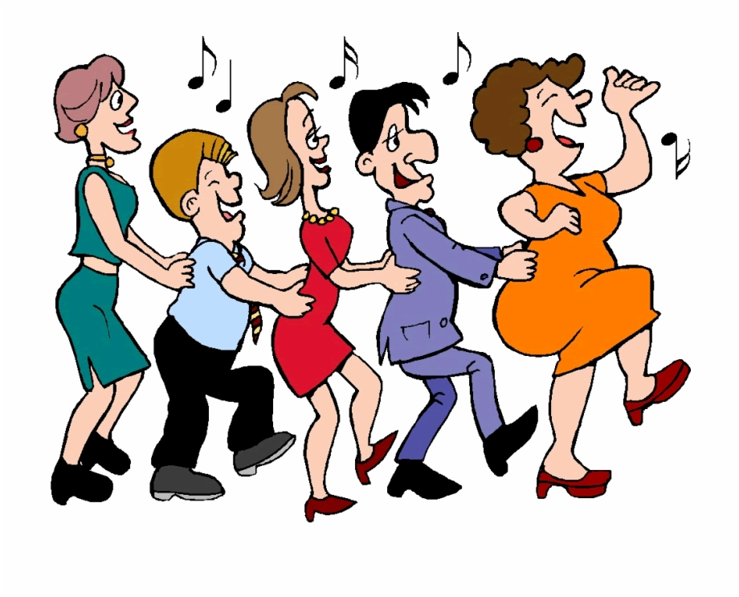

Personal Connection
My personal connection to "Just Dance" is playing it in the living room with my family on the weekends. I really wanted to have "Just Dance 2020", because we only have "Just Dance 4", but maybe it was for the best because we rarely have time to play anymore. My favourite song on "Just Dance 4" was "Beware of the Boys (Mundian To Bach Ke)" because I would always score the most in that dance. So I guess I'm talented at dancing Bollywood? My mom usually never plays video games with my siblings and I, so it was really surprising to see her play "Just Dance" with us and actually having fun too.
